Guilochéove krivulje, superformula i sigurnost
Autor: Elvis Popović
Sadržaj |
Sažetak
Guilloché krivulje koriste se kao grafički zaštitni mehanizam. Zasnivaju se na periodičkim krivuljama, nastalim na geometrijskim tokarilicama, odnosno pomoću matematičkih formula. Projektni zadatak svodi se na izradu eksperimentalne aplikacije za generiranje takvih uzoraka.
Uvod
Guilloché krivulje i uzorci, svoje ime vuku još iz vremena graviranja mehaničkih satnih mehanizama i drugih proizvoda precizne mehanike, ali i manufakture nakita.
Iako su kao dekorativni elementi postojali još u antičkim vremenima, današnje značenje duguju francuskom inženjeru Guillotu koji je oko 1770. godine izumio mehanički stroj za brzo graviranje periodičkih krivulja na tvrdim metalnim površinama. Graviranje na mekšim materijalima postojalo je i ranije, a ornamenti nastali takvim graviranjem karakterizirali su neoklasičnu arhitekturu.
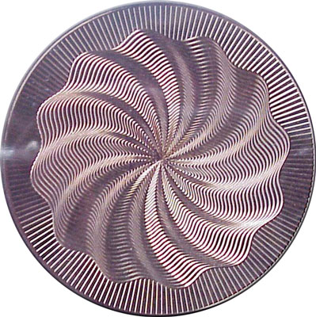
Preuzeto sa [1]
{kind=link}
Ornamenti sačinjeni od periodičkih krivulja koristili su se za zaštitu novca i banknota, a tu svrhu imaju i danas, kada se novac štiti na brojne druge, modernije načine poput primjerice holograma i vlakana vidljivih pod ultraljubičastom svjetlošću.
U ovom radu, orijentirat ćemo se više na sigurnosnu primjenu a manje na dekorativnu. Naime, krivulje nastale postupkom spirografije, geometrijskog tokarenja, izračunavanjem superformula i drugih generalizacija superelipsi, ponašaju se poput kriptografskih algoritama. Vrlo mala promjena parametara, rezultira potpuno divergentnim oblicima krivulja a time i uzoraka. Od tako nastalih krivulja gotovo je nemoguće doći do parametara koji su ih generirali, pa tako parametri imaju sličnu ulogu kao i privatni ključevi u kriptosustavima. Zbog nelinearnosti, moguće je dobivati praktički neiscrpan broj konačnih rješenja i izgleda uzoraka. Primjenu nalazimo posvuda oko nas. Najlakše ih je uočiti na državnim markicama kojima se označavaju cigarete i alkoholna pića.
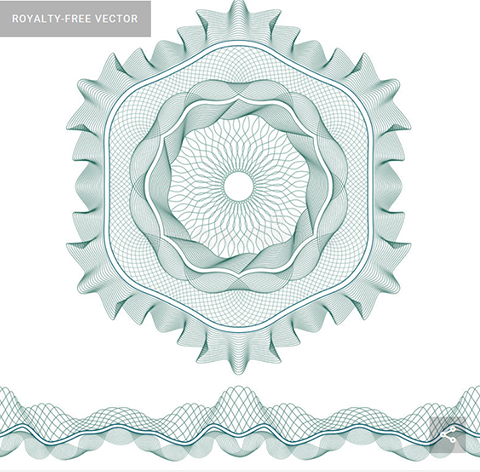
(Preuzeto sa [2] )
{kind=link}
Prikazana slika pokazuje jedno kompletno, profesionalno rješenje. Takve krivulje sastavljene su često od kombinacije više generiranih krivulja.
Autori špice filma o popularnom agentu Jamesu Bondu - Casino Royale, upotrijebili su ih i kao dekorativni element.
{kind=link}
Superformula
Superformula kao generalizacija superelipse, jedan je od matematičkih aparata koji pomažu u kreiranju Guillocheóvih uzoraka. U polarnom koordinatnom sustavu ima slijedeći oblik:
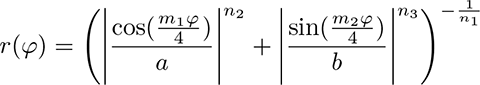
Ovu je formulu imenovao danski matematičar Piet Hein, kao uostalom i njezin specijalni slučaj, superelipsu koja u polarnom koordinatnom sustavu ima oblik:
Sama superformula je relativno dosadna krivulja. Ako se nacrta u polarnom sustavu, izgleda u najzanimljivijim slučajevima ovako:
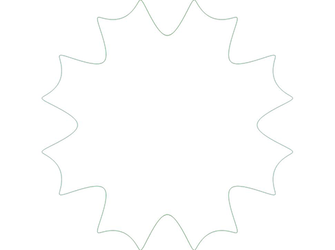
U Guillochéovim uzorcima najčešće se jedna krivulja kreće po stazi koju čini druga krivulja. Može se i rotirati slijedeći tangentu, i tek tada se dobivaju zanimljiviji rezultati koji onda kombinacijama mogu tvoriti zanimljive uzorke:
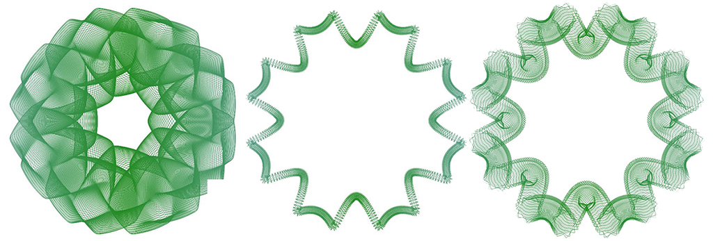
Kombiniranjem više elemenata, zajedno sa spirografskim krivuljama koje obično daju zanimljive rozete, možemo se već približiti profesionalnim rješenjima.
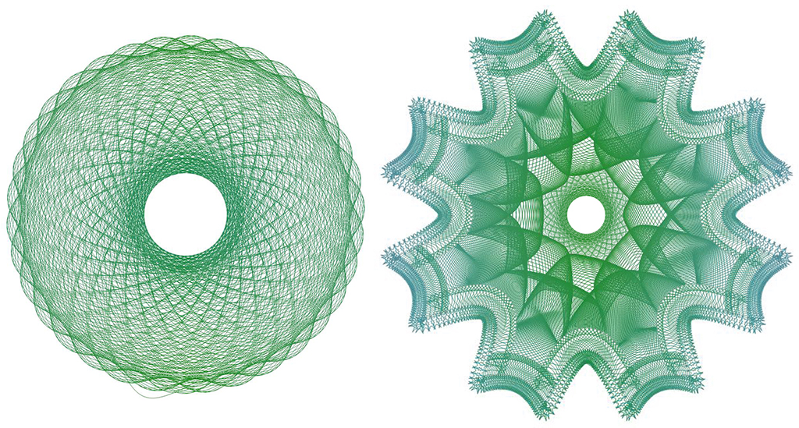
Dakako, nije mi bila ni namjera, niti su resursi dozvoljavali da izradim profesionalno rješenje kakvo je na primjer Excentro ([3]), ali osnovnu funkcionalnosti ipak je bilo moguće razviti. Na slijedećoj slici je sučelje aplikacije Excentro. Može se vidjeti da nudi velike mogućnosti te je usporediva po razini složenosti sa Adobe Photoshopom ili nekim drugim grafičkim aplikacijama koje, dakako, nemaju istu namjenu.
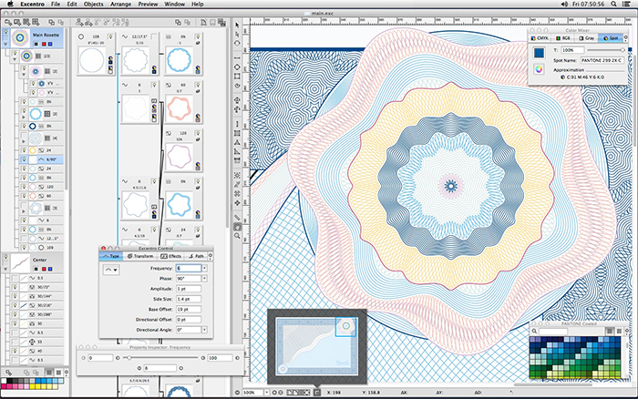
{kind=link}
{kind=link}
{kind=link}
{kind=link}
{kind=link}
{kind=link}
Grafički podsustav
Iako je superformula i druge srodne formule, dostupna u literaturi, i relativno je jednostavno isprogramirati njihovo prikazivanje, kreiranje uzoraka nije nimalo jednostavan zadatak. Te krivulje se moraju na neki način komponirati u uzorke, a uzorci dalje slagati u slojeve. Mogućnosti su beskrajne, ali je potrebo i veliko iskustvo da se poluči profesionalni rezultat. Osim toga, samo iscrtavanje krivulja po ekranu mora biti dovoljno kvalitetno a ujedno i brzo. Proračun krivulja često zahtijeva i vrijeme, tako da je potrebno i čuvati rezultat u memorijskoj preslici ekranskog prikaza, kako bi se prilikom osvježanja prozora mogao i sam sadržaj obnoviti brzo i bez nove kalkulacije. Zbog toga je potreban i pravi zbor tehnologije (engl: tech choice).
Svaki operacijski sustav ima u svojoj osnovi nekakav API koji služi za crtanje po grafičkim elementima. Cocoa, Carbon, GTK+, QT, X11... Ovi sustavi omogućavaju programeru virtualizaciju grafičkog uređaja. Drugim riječima, programer ne mora brinuti o konkretnoj implementaciji grafičkog hardvera, pa čak ni o tome o kakvom se hardveru radi: grafičkoj kartici, printeru, ploteru i slično. Ovi sustavi obično su ugrađeni u sam kernel operacijskog sustava, iako se i to mijenja od verzije do verzije, osobito kada se radi o Microsoftovim rješenjima poput GDI sustava.
Operacijski sustav MS Windows danas se prilikom prikazivanja grafike oslanja na nekoliko paralelnih API-ja, od koji je tu stari ali brzi GDI, noviji GDI+ (uveden u Windows XP te Windows Server 2003), ali i podsustavi Direct X-a, koji je bio razvijen od "davnih" vremena kao podrška igrama, budući da omogućava kontrolirani izravni pristup grafičkom hardveru. Ne treba preskočiti ni Open GL koji je u prošlosti pretrpio burna razdoblja upravo zahvaljujući Microsoftu. Tako je sustav specijaliziran za dvodimenzionalni prikaz u okviru Direct X-a nazvan Direct2D, a bitna odlika tog sustava je da je potpuno hardverski akceleriran. Kada se pomoću njega prikazuju linije, zapravo se iscrtavaju pravokutni segmenti sastavljeni od dvaju trokuta koje onda GPU prikazuje kao da su trodimenzionalni objekti. GDI sa druge strane prikazuje linije koristeći Bresenhamov algoritam, razvijen davno za plotere, te noviji Wu-ov algoritam (nazvan prema Xiaolin Wuu, koji ga je nazvao jednostavno "Wu antialiasing"), koji omogućava odzubljivanje (eng. antialiasing). Ovaj je algoritam ugrađen u GDI+ i .NET podsustav.
Kad govorimo o GDI+ sustavu, treba naglasiti da je to nadgradnja GDI sustava koja donosi objektni pristup, odnosno klase za upravljanje grafičkim elementima, afine transformacije poput matrica skaliranja i rotacija, fino iscrtavanje linija, gradijentne kistove, pretapanje uz upotrebu alfa kanala (eng. alpha blending), ali i kardinalne splineove. GDI+ uvodi i novi koordinatni sustav, koji više nije onaj vezan uz sam grafički uređaj, već je to svjetski koordinatni sustav. Pored toga, umjesto čistih bitmapa, kakvima manipulira GDI, GDI+ može učitati, izmijeniti i snimiti brojne formate: BMP, GIF, JPEG, Exif, PNG, TIFF, ICON, WMF i EMF. GDI+ je sporiji od GDI-a, što zbog svoje objektne orjentiranosti, što zbog naprednih grafičkih mogućnosti koje se, uzgred budi rečeno, mogu i isključiti.
Grafičko sučelje
Eksperimentalna aplikacija, koju koristim u ovom projektu, bazirana je na wxWidgets GUI biblioteci. Ovo je Open source multiplatformski GUI toolkit visoke učinkovitosti i fleksibilnosti, potpomognut i wxFormBuilder aplikacijom za dizajn formi i dijaloga za brojne jezike poput C++, Pythona, PHP, LUA i XRC. Spomenimo samo da je pomoću ovog toolkita razvijeno grafičko sučelje za aplikacije poput Bit Torrenta, FileZille, Audacity, aMule, te popularno RAD razvojno okruženje Code::Blocks, koje sam i ja koristio za rad na ovom projektu.
WxWidgets je platformski neovisan, pa kada manipulira grafikom, koristi mogućnosti operacijskog sustava na kojem se izvršava aplikacija. Stoga ima vlastiti Render kontekst, a koji se onda prilagođava Cocoa, GTK, GDI+, Direct2D, X11 i tako dalje. No ono što je lijepo u svemu tome jest činjenica da može vratiti nativni kontekst, pa je tako moguće dobiti potreban kontekst za crtanje po grafičkim elementima koje prikazuje, ali tako da se zaobiđe njegov sustav za crtanje. Iako ovo narušava princip portabilnosti, ipak je za ovaj projekt bilo korisno. Naime, renderski kontekst mora poštovati presjek osobina svih podržanih operacijskih sustava i njihovih API-a, dok vraćeni nativni GDI+ to ne mora. Tako je moguće koristiti specifične napredne grafičke osobine GDI+ sustava koje npr. Cocoa nema.
Bitno je spomenuti da svaka grafička kontrola koja se prikazuje, bilo da je to gumb, panel, okvir teksta, platno ili ikona, ima svoj kontekst uređaja (eng. device context). WxWidgets može vratiti kontekst bilo čega što se postavi u prozor (pa i samog prozora, bilo da se radi o njemu kao takvom, bilo da se radi o klijentskom području). I što god da se izabere, API može tome pristupiti i crtati po volji.
Sa druge strane, sama implementacija C++ kompilera, a koji je u ovom slučaju bio TDM MinGW64 GCC, bez podrške za Direct2D, diktirala mi je upotrebu GDI+ sustava. Naime, to je bio jedini API koji je wxWidgets vidio kao prisutan u sustavu. Posebnom naredbom, wxWidgets, odnosno objekt wxGraphicsContext mi je vratio pokazivač na nativni GDI+ kontekst koji u Windows OS-u reprezentira klasa Graphics. Dalje se kontrola prenijela na GDI+, i wxWidgets se mogao zaboraviti, odnosno, ma što god da GDI+ nacrta po nekoj kontroli, u našem slučaju wxPanelu, wxWidgets će to uredno osvježavati, a zbog činjenice da kontekst zapravo ni ne pripada samim wxWidgetskima nego operacijskom sustavu koji ga direktno prenosi driverima uređaja za prikaz.
Na kraju konačni izbor tehnologija i toolkita bio slijedeći:
Grafički API: Windows GDI+
Toolkit za izradu grafičkog sučelja: wxWidgets 3.0.3
Dizajner formi i dijaloga za wxWidgets: wxFormBuilder 3.5.1-RC1
Programski jezik: C++11
Kompiler: TDM MinGW64 GCC-5.1.0-2
C++ razvojno okruženje: Code::Blocks 16.01 (Unicode)
Dvostruki međuspremnici i memorijski kontekst
Moderni hardver, opremljena moćnim grafičkim karticama omogućava višestruke međuspremnike. Drugim riječima, slika koja se šalje grafičkoj kartici ne iscrtava se po ekranu već po posebnoj površini koja se hardverski preklapa, tj. povezuje sa RAMDAC odnosno njegovim digitalnim ekvivalentom u grafičkoj kartici. Tako se ne vide artefakti za vrijeme iscrtavanja. No u našem slučaju, ni to nije bilo dovoljno. Programer uvijek ima mogućnost kreirati svoj vlastiti memorijski kontekst i pridružiti mu odgovarajuću bitmapu. Ona ne mora po veličini odgovarati samom ekranskom prikazu, odnosno može biti daleko veća ili pak manja. Bitno je da se ona ne može uništiti kada se prozor smanjuje ili povećava. U njoj slika uvijek bude konzervirana a po potrebi se za vrijeme osvježavanja njezin sadržaj kopira u kontekst samog prikaza. Ovakav je mehanizam i ovdje primijenjen.
Naime, crtanje Guillochéovih krivulja nije uvijek brzo. Ako bi iz bilo kojeg razloga ekranski prikaz izgubio sadržaj, slika bi se morala ponovno kalkulirati i crtati. Ovime se to izbjegava. I drugi, važniji razlog: kada se prozor smanji, taj kontekst se ne mijenja. Korisnik i dalje vidi sliku ma kako mijenjao veličinu prozora. Tek na zahtijev, sustav će ponovno nacrtati krivulju, ovaj puta pazeći na veličinu prozora.
Prijenos slike iz memorijskog konteksta u kontekst prikaza naziva se Blitanje slike, i ima više mogućnosti kako se to može učiniti. Često je hardverski akcelerirano, a ako i nije, vrlo je brzo jer se prenosi direktno preko grafičke sabirnice. Ovako se često radi animacija gdje i CPU mora sudjelovati u njezinom stvaranju, na primjer kada se iscrtava neki tekst, ili kao u našem slučaju fino zaglađene krivulje.
Memorijski kontekst se kreira na slijedeći način:
bitmap=new wxBitmap(wxSystemSettings::GetMetric ( wxSYS_SCREEN_X ) ,wxSystemSettings::GetMetric ( wxSYS_SCREEN_Y ) );
memDC = new wxMemoryDC(*bitmap);
Kopira se u kontekst prikaza sustava GDI naredbom BitBlit preslikanom u metodu Blit objekta hdc (rukovatelj konteksta uređaja) u trenutku kada se zahtijeva osvježavanje prozora:
panel = wxDynamicCast(event.GetEventObject(),wxPanel);
panel->GetSize(&w,&h);
wxAutoBufferedPaintDC hdc(panel);
hdc.Blit(0,0,w,h,memDC,0,0);
Možemo upravo ovdje vidjeti da imamo direktni pristup kontekstu bilo koje GUI kontrole, a u ovom slučaju je izabran panel. Jednom dobiveni nativni GDI+ kontekst omogućava upotrebu svih raspoloživih Windows GDI+ klasa, odnosno, u objektima implementiran API.
Gdiplus::Graphics *gdiPlus;
wxGraphicsContext *gc;
gc = wxGraphicsContext::Create( *memDC );
/* nativni Windows GDI+ */
gdiPlus=(Gdiplus::Graphics*)(gc->GetNativeContext());
Ovdje treba napraviti usporedbu između wxGraphicsContekst koji pripada wxWidgets toolkitu, i iz njega vraćenog nativnog Windows GDI+ konteksta. wxGraphicsContekst može crtati staze jednako kao i GDI+. Za to postoji isti postupak kreiranja staze od osnovnih krivulja. Može jednako crtati i splineove koristeći metodu DrawSpline. Detaljan prikaz metoda može se vidjeti ovdje [4]. Samo crtanje krivulja moguće je na oba načina, koristeći i wxWidgets i nativni GDI+:
/* wxWidgets */
gc->SetPen( *wxRED_PEN );
wxGraphicsPath path = gc->CreatePath();
path.MoveToPoint(0.0, 50.0);
path.AddLineToPoint(100.0, 50.0);
...
gc->StrokePath(path);
/* nativni GDI+ */
Pen pero(&brush,1);
LinearGradientBrush brush(gradientPoints[0], gradientPoints[1],colors[0],colors[1]);
GraphicsPath path;
path.AddCurve(points,numPoints);
gdiPlus->DrawPath(&pero, &path);
U slučaju GDI+, upotrijebljen je i gradijentni kist na pero za krivulje, i tu vidimo specifičnu fleksibilnost GDI+ sustava. Uvijek je moguće, sadržaj bitmape snimiti u vanjsku datoteku, i tu možemo ponovno koristiti resurse wxWidgets toolkita:
bitmap->ConvertToImage().SaveFile(izlaznaDatoteka,wxBITMAP_TYPE_JPEG);
Isto vrijedi i za učitavanje slika koje se na ovaj način mogu velikom brzinom prenijeti na ekran.
Moje istraživanje
Istraživačka aplikacija sastoji se od dva glavna dijela:
-panela za iscrtavanje
-sustava za upisivanje parametara
Izgled grafičkog sučelja prikazan je na slijedećoj slici:
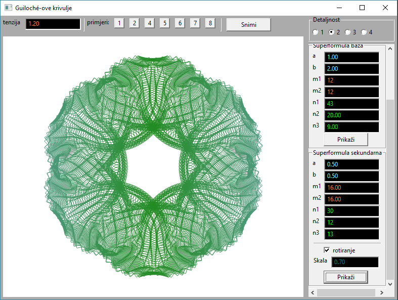
Među parametrima uviđamo tri glavna elementa: spirografske krivulje, koje su neovisne o superformuli, baza na principu superformule, tj. šine po kojima putuje treća, sekundarna superkrivulja. Karakteristično za sve krivulje, tu je još i tenzija. Naime, krivulje se iscrtavaju uz upotrebu GDI+ kardinalnih splineova. Ovi splineovi su slične Bezierovim krivuljama ali im se normale određuju automatizmom. Moraju proći kroz sve točke kojima je krivulja zadana, a da pro tome krivulja bude po dijelovima glatka (derivabilna). Tenzija označava otpor savijanju krivulje kada nastoji proći među točkama, i odgovara savitljivosti gumenog ili drvenog krivuljara kakav se nekada koristio u brodogradnji za istu namjenu. Uza sve to, sama aplikacija ima zapamćene neke zanimljive skupove parametara, koji se mogu pozvati pritiskom na male gumbe iznad panela.
Aplikacija sadržaj prikazan u panelu može snimiti u jedan od mogućih formata (JPEG, TIFF, PNG, BMP) uz upotrebu standardnog dijaloškog okvira.
Trenutna implementacija koristi memorijsku bitmapu veličine ekranskog prikaza, dok se krivulja uvijek prikazuje tako da stane u prostor panela.
Ovom se aplikacijom itekako može zabavljati, tim više što je moguć izvoz slika, i naknadno montiranje u složenije uzorke u nekoj drugoj aplikaciji, npr. GIMP-u ili Adobe Photoshopu. Osim toga, GDI+ je neovisan o prikazu, pa je moguće kardinalne splineove izvesti i u neki vektorski format. Dakako, tada zaobilazimo bitmapu kao što je to sada riješeno.
Sam matematički dio je standardan. To su klasične spirografske i superformule sa svim aktivnim parametrima. Tu bi se moglo ugraditi još mnogo zanimljivih elemenata, poput krivulja omotača (eng. envelope) umjesto običnih šina, zatim kombiniranja spirografskih krivulja i superformula kao takvih omotača, no to bi nas odvelo u dugotrajan projekt. Primjerice, gore navedeni Excentro, razvija se od 90-ih godina prošlog stoljeća, a nastao je na osnovu ruskog sigurnosnog sustava. Tako da je ovo zapravo tek jedan kreativni početak, uvod u jedno ogromno područje primjene ovog zanimljivog sigurnosnog sustava.
U nastavku su prikazane neke od zanimljivijih krivulja, bez naknadnih korekcija.
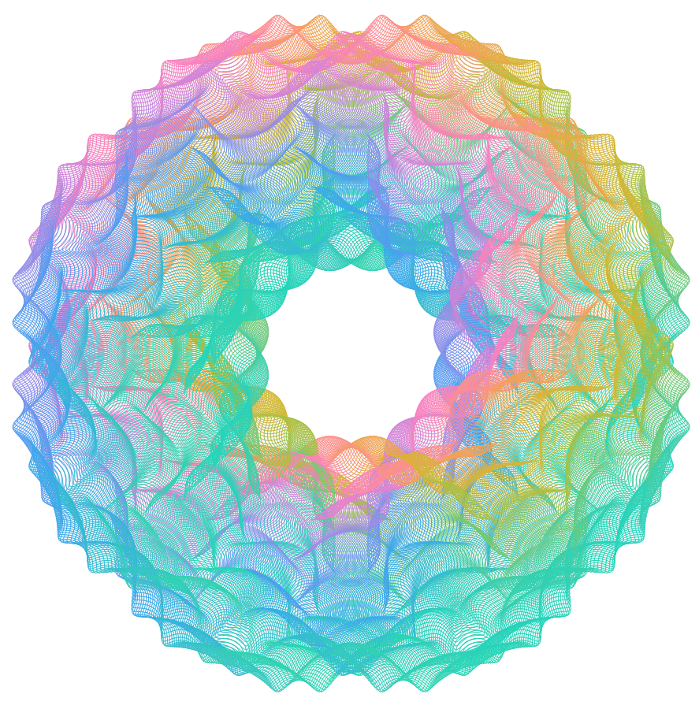
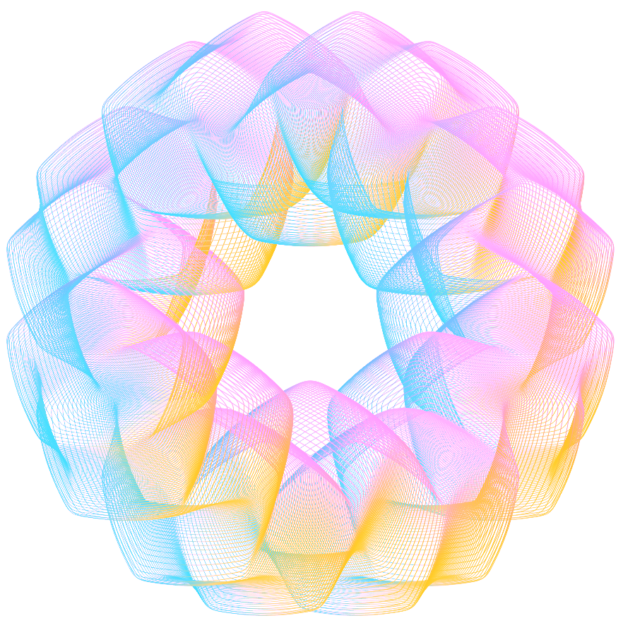
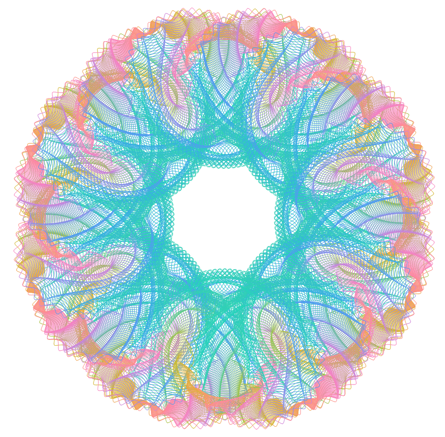
{kind=link}
{kind=link}
{kind=link}
{kind=link}
Kardinalni spline
U ovom projektu sve krivulje crtamo glatko, interpolirajući vrijednosti koje su izračunate, koristeći kardinalni spline. Interpolacija se koristi i za samu geometriju krivulje, kao i za njezinu boju. U obojenim krivuljama, koriste se samo 4 definirane boje, a onda se pomoću kardinalnih splineova interpoliraju te boje u fini gradijent, posebno za svaki od 3 kolor kanala (svaki od R, G i B kanala je posebna krivulja). Važno je naglasiti da niti wxWidgets niti Windows GDI+ nemaju mogućnost crtanja gradijentnih krivulja. Ono što GDI+ ima jest popunjavanje prostora razapetog krivuljom u vidu gradijenta, kao i bojanje krivulje linearnim gradijentom. No bojanje krivulje gradijentom koji će slijediti samu krivulju automatski nije implementirano, i može se postići tek programerskim trikovima. Zbog toga sam odlučio napisati svoj kardinalni spline koji će imati sve mogućnosti koje mi se prohtiju.
Kardinalni spline je glatka krivulja bazirana na Hermitéovim interpolacijama. Zapravo je to posebno oblikovana Beziérova krivulja, gdje su tangente izračunate prema posebnom pravilu na osnovu okolnih točaka kao i na osnovu samo jednog parametra - parametra "tenzije" koji odgovara, geometrijski gledano, duljinama tangenti, a kao rezultat opisuje koliko će te tangente utjecati na krivulju u okolini dirališta tangente. Tenzija ne mijenja sam kut tangente. Kut ovisi isključivo o rasporedu susjednih točaka. Tenzija se obično kreće u rasponu od -1, za izrazito uglačanu i "debeljuškastu" krivulju, preko 0 kada je kardinalni spline zapravo Catmull-Romova krivulja, pa do 1 kada krivulja prestaje biti glatka, jer je daljina tangente nula, odnosno interpolacija se svodi na povlačenje pravaca među točkama. Daljnje povećanje parametra, rezultira zrcalnom tangentom, koja u okolini dirališta stvara petlju. Za interpolaciju gradijenata kolor kanala, u ovom je projektu postavljen parametar tenzije na nulu, što znači da se koristila Catmull-Romova krivulja, uz rezanje u interval 0-255.
Kardinalni spline nastao je kao matematički model splinea, drvenih savitljivih krivuljara koji su se upotrebljavali u brodogradnji. Često su bili čvrsto priklješteni olovnim utezima u obliku patke, koji su se tako i zvali - olovne patke. Posebno izvježbani crtači su tako mogli crtati zakrivljenja na ogromnim planovima brodova. Parametar tenzija upravo opisuje fizikalno ponašanje takvih krivuljara, tj. koliko je to drvo savitljivo, kako je priklješteno i slično.
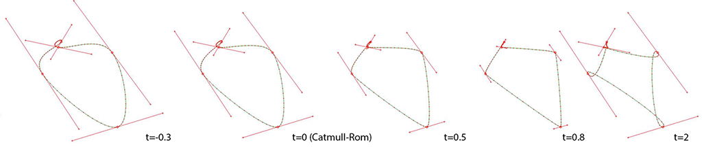
U Windows GDI+ sustavu, kardinalni spline se normalno poziva na osnovu točaka, interpolaciju obavlja sam GDI+, i odmah ju prikazuje u kontekstu uređaja. WxWidgets nemaju mogućnost crtanja kardinalnih splineova, iako wxDC kontekst može crtati Bezierove splineove. Iz tog razloga sam razvio algoritam za kardinalni spline i zaobišao Microsoftovu implementaciju. Ovo mi omogućava još jednu mogućnost: promjenjivo koloriranje splinea. Algoritam za kardinalni spline dajem u nastavku. Njime je konstruirana i gornja slika koristeći testnu metodu koju sam također napisao kako bih se uvjerio da algoritam ispravno funkcionira:
{kind=link}
void KardinalniSpline(wxRealPoint points[], int numPoints, wxRealPoint interpolirano[], int podjela, double tenzija, wxRealPoint tangente[])
{
int i, indeks;
wxRealPoint p0,p1,p2,p3, delp, m1, m2;
double h00[podjela], h10[podjela], h01[podjela], h11[podjela];
double t,t2,t3,tf,invp;
//hermiteova baza
for(i=1, invp=1.0/podjela; i<podjela; i++)
{
t=invp*i;
t2=t*t;
t3=t2*t;
h00[i]=2.0*t3-3.0*t2+1.0;
h10[i]=t3-2.0*t2+t;
h01[i]=-2.0*t3+3.0*t2;
h11[i]=t3-t2;
}
tf=0.5*(1.0-tenzija);
for(int k=0; k<numPoints; k++)
{
p0=points[((k-1)%numPoints+numPoints)%numPoints];
p1=points[k];
p2=points[((k+1)%numPoints+numPoints)%numPoints];
p3=points[((k+2)%numPoints+numPoints)%numPoints];
//tangente
m1=tf*(p2-p0);
m2=tf*(p3-p1);
tangente[k]=m1;
indeks=k*podjela;
interpolirano[indeks].x=p1.x;
interpolirano[indeks].y=p1.y;
for(i=1; i<podjela; i++)
{
indeks=k*podjela+i;
interpolirano[indeks].x=h00[i]*p1.x+h10[i]*m1.x+h01[i]*p2.x+h11[i]*m2.x;
interpolirano[indeks].y=h00[i]*p1.y+h10[i]*m1.y+h01[i]*p2.y+h11[i]*m2.y;
}
}
}
Uz kardinalni spline, postoji i naredniji model - Kochanek-Bartels spline (Doris H.U. Kochanek i Richard Bartels, 1984). Uz tenziju, on ima i kontinuitet te bias. Ovakve krivulje koristi Adobe Flash za animacijske krivulje, kao i 3D studio Max (TCB krivulje) i drugi programi. Razmišljam o implementaciji i u ovom projektu. Nedogradnja je jedostavna i samo treba zamijeniti mjesta gdje se kreiraju tangente, odnosno izraze m1=tf*(p2-p0) i m2=tf*(p3-p1) složenijim izrazima koji također kada se svi parametri postave na nulu, daju Catmull-Romov spline, dok za postavljanje biasa i kontinuiteta na nulu daju kardinalni spline. Sada je vrijeme reći i da proizvoljni izbor točaka m1 i m2 daje klasičnu Bezierovu krivulju. Ona je također Hermitéova interpolacija, i funkcionira potpuno identično kardinalnom splineu, no jedina je razlika da sam korisnik određuje kut i duljinu normala, kao i to da ne mora postojati kontinuitet. Dakle, svako diralište ima dvije normale, te se one zovu binormalama. Kod kardinalnih splineova te binormale su zrcalne, dok kod Kochanek-Bartelsovih splineova ne moraju biti. Svaka se Bezierova krivulja može prikazati nizom TCB parametara kao Kochanek-Bartelsov spline. Treba reći i da se Hermitéova baza, koja je za kubne krivulje niz od 4 polinoma stupnja 3, može prikazati preko Bernsteinovih polinoma. Oni daju identični rezultat, jedino je sama formulacija drugačija i omogućava bilo koju bazu bilo kojeg stupnja.
Zaštita uz upotrebu Guilloché uzoraka
Kao što je već spomenuto, krivulje i uzorci se ponašaju poput kriptosustava. Svaka kombinacija parametara daje drugačiju krivulju i prilično je teško iz njih natrag dobiti parametre koji su je generirali. Ako je dobro izveden, Guilloché uzorak je praktički nemoguće krivotvoriti. I premda je prilično jednostavno danas, u vrijeme naprednih skenera i digitalnog tiska, reproducirati bilo kakav grafički prikaz, a i same se krivulje mogu na neki drugi način parametrizirati i reproducirati, kod sigurnosnih uzoraka to je povezano sa velikim brojem krivulja koje mijenjaju konkavnost i konveksnost, preklapaju se često i pod malim kutevima, imaju veliku gustoću i dako dalje, što rezultira enormnom količinom memorijskog prostora potrebnog da se krivulje, pa čak i njihovi izvedeni parametri, zabilježe. K tome prepoznavanje uzoraka i parametrizacija zahtijeva ogromne procesorske resurse potrebne da se krivulje i pokušaju parametrizirati. Naime, originalne parametre ne možemo dobiti natrag, ali nekakve drugačije parametrizacije su moguće. No takve parametrizacije imaju ogromnu redundanciju i zahtijevaju značajne resurse. Jednako tako, uzorak je često vrlo gust. Današnji skeneri, ma kako visoke razlučivosti bili, ipak ih ne mogu razlučiti do te mjere da se omogući polazište za OCR parametrizaciju. Iz tih razloga je svako krivotvorenje ovih uzoraka moguće, ali preskupo za praktičnu primjenu. Jer često premašuje dobitak koji se takvim krivotvorenjem pokušava ostvariti. Često je u linijama ugrađen nevidljivi mikrotekst, kojega nije moguće reproducirati uobičajenim uređajima. Čak i sama boja kojom se iscrtava uzorak može biti reljefna, može biti iridescentna, pa čak i magnetska tinta, što za većinu dostupnih uređaja, a tu se misli na uobičajeni tisak, digitalne printere i slične uređaje, predstavlja u kombinaciji sa gustoćom uzoraka nepremostivu prepreku. Rezultat, odnosno takva krivotvorina, ne može proći rigorozne provjere.
Iako se čini čudnim, ali prilikom implementacije SVG vektorskog formata, dogodilo se to da je Adobe Illustrator kao i Chrome browser taj format mogao otvoriti samo ako su postavke bile na manje od 2. Na postavkama detaljnosti 3, datoteka je imala 50MB što je bilo Illustratoru dovoljno da kapitulira prilikom učitavanja. Na postavkama 4 i 5, uopće nije vrijedilo ni pokušavati.
Naime, projektna aplikacija podatke koristi sekvencijalno. Cjelokupni uzorak sa svim splineovima se ne čuva u memoriji, tek slika nastala iscrtavanjem jedne po jedne krivulje. Kada Illustrator otvara SVG vektorski format, on zapravo treba spremiti sve krivulje u memoriju. I to mu ne uspjeva. Ovime je potvrđena činjenica da je Guilochéove uzorke jako teško krivotvoriti jer jednostavno guše resurse. Čak i tako jednostavan zahtijev, kao učitavanje SVG formata ne može obaviti profesionalni grafički program poput Illustratora.
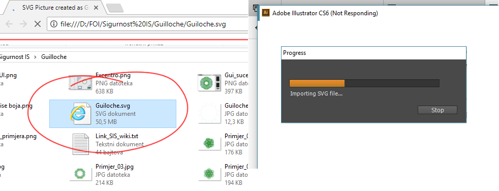
{kind=link}
Zaključak
Izrada sigurnosnih uzoraka ima praktično značenje, ali je u ovom slučaju bila i zanimljiva igra sa parametrima i do neke mjere estetikom. Naime, Guilloché uzorci nisu samo mjera sigurnosti, oni su i dekorativni element. Uz upotrebu raznih boja gotovo da mogu poslužiti kao umjetničko djelo, iako ih generiraju relativno jednostavne matematičke formule. Projekt je pokazao da je moguće upotrijebiti grafiku na relativno niskom nivou za efikasno kreiranje ovakvih krivulja i izvoz u vektorski, kao i u rasterske formate. Koristeći samo Windows GDI+, a u drugoj fazi projekta niti to, i dakako ekvivalentne grafičke API na drugim sustavima i osnovni C++ jezik, ovako se nešto može izraditi. U naknadnoj inačici, uz implementaciju vlastitih algoritama za kardinalne splineove, aplikacija je postala potpuno portabilna. Daljnja istraživanja mogla bi ići do mjere da se pokuša, jasno ne na ekranu, konstruirati tolika gustoća krivulja, da one postane usporedive sa valnom duljinom svjetlosti. U tom slučaju bi nastala i interferencija, što bi nas približilo jednoj drugoj vrsti zaštite: hologramima.
{kind=link}
Literatura
Chitra Thinger, Komal Paliwal, Guilloche Pattern for Security in Confidential Documents, IJISET - International Journal of Innovative Science, Engineering & Technology 2006, dostupno na http://ijiset.com/vol3/v3s10/IJISET_V3_I10_45.pdf 25.1.2018.
Excourse Excentro Information, 2018, dostupno na http://www.excourse.com/excentro/ 25.1.2018.
WxDC Class Reference, dostupno na http://docs.wxwidgets.org/3.0/classwx_d_c.html 26.1.2018.
WxGraphicsContext Class Reference, dostupno na http://docs.wxwidgets.org/3.0/classwx_graphics_context.html 26.1.2018.